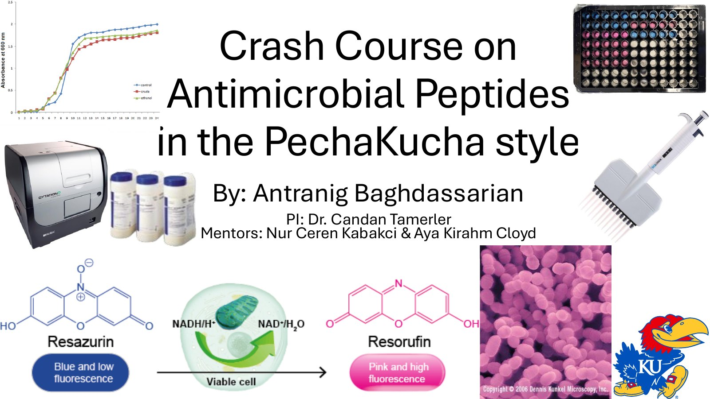
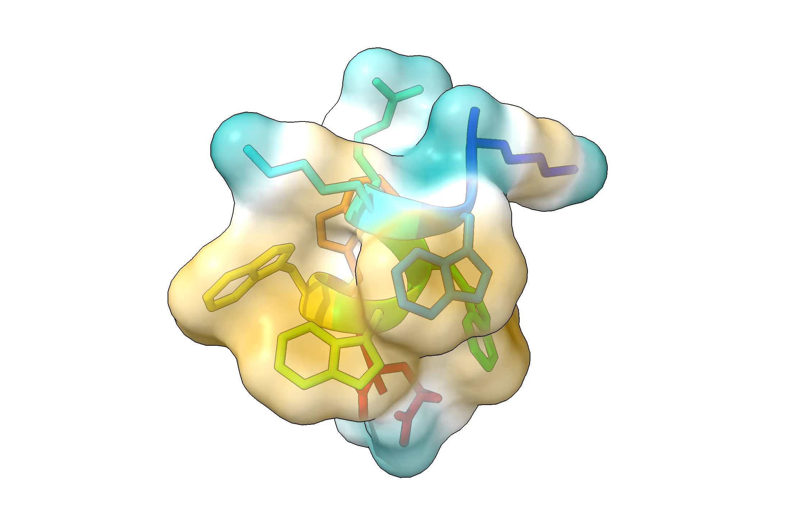
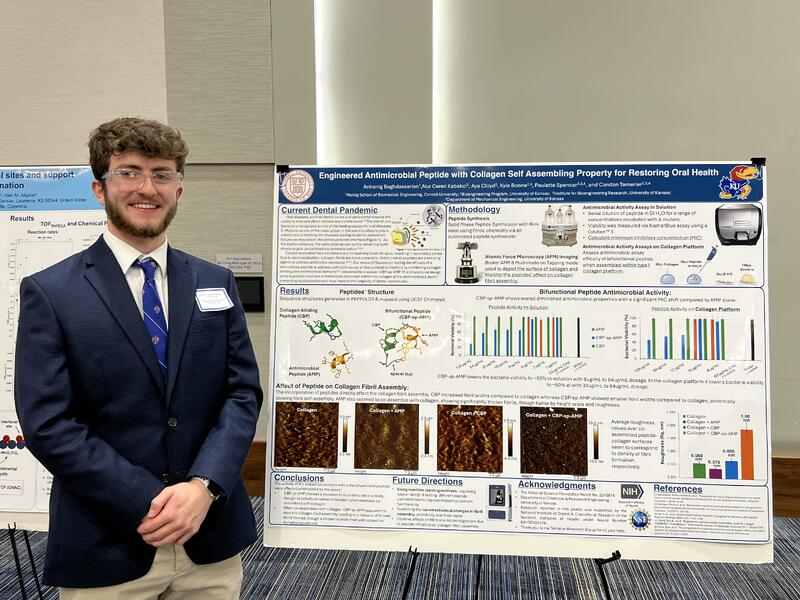

Engineered Antimicrobial Peptide with Collagen Self Assembling Property for Restoring Oral Health
I worked in the Tamerler Lab through an REU at Kansas University! While there I got to do cool stuff like:
- Analyzed novel peptides for use on the adhesive of dental cavities based on their effectiveness of preventing bacterial growth and change in collagen-fibril-formation via 8 self-lead experiments (with bacterial cultures) of antimicrobial and AlamarBlue assays, using Cytation software to measure viability and atomic force microscopy to depict fibril formation
- Evaluated bi-functional peptide effectiveness to maintain antimicrobial and collagen forming properties
Poster abstract
A primary cause of dental composite restoration failures is the presence of the gram-positive bacteria, Streptococcus mutans (S. mutans), which tends to form a biofilm in between the adhesive and dentin (a/d) interface, corroding away the filling and the remaining tooth structure potentially causing secondary caries. Experts in restorative and preventative dentistry have agreed that the prevention of secondary caries as well as the optimization of adhesive are two items of highest importance. Antimicrobial peptides show promise as a way to prevent secondary caries given their effectiveness against S. mutans. In this poster, we studied the effectiveness of a computationally designed chimeric peptide with collagen binding and antimicrobial domains as an antimicrobial agent at the a/d interface against S. mutans. We further investigated antimicrobial efficiency of chimeric peptide on our engineered collagen platform, which mimics the demineralized collagen structure of dentin at the a/d interface. Our results show that the chimeric peptide holds promise in aiding the strength and longevity of the dental filling.
PechaKucha presentation
I presented this PechaKucha-style introduction to antimicrobial peptides for local middle school students visiting the university.


